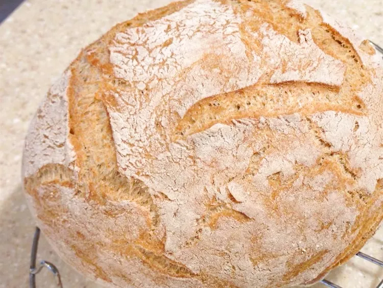

Bread

Here is delicious whole wheat bread with reduced sodium, baked in a Dutch oven.
Ingredients
- 1 ½ cups warm water
- 1 teaspoon active dry yeast
- 1 teaspoon agave nectar
- 3 cups whole wheat flour
- ½ teaspoon salt
Steps
- Pour water into a microwave-safe measuring cup and heat in the microwave oven for about 1 minute. Check temperature using a food thermometer to be sure water is no hotter than 100 degrees F (38 degrees C). Add yeast and agave; let sit until foamy, about 15 minutes.
- Combine flour and salt in a large bowl. Add yeast mixture; stir to combine and knead a few times. Cover bowl and let dough rise in a warm place until doubled in size, overnight to 18 hours.
- Turn dough out onto a floured surface. Knead 5 to 10 times using floured hands. Shape dough into a ball and let rise while oven is preheating.
- Preheat the oven to 450 degrees F (230 degrees C) and place a Dutch oven inside to warm for 30 minutes.
- Use floured hands to carefully drop dough into the hot Dutch oven. Use potholders to place the lid on the Dutch oven.
- Bake in the hot oven for 30 minutes. Uncover Dutch oven and bake until bread is deep golden brown, 10 to 15 minutes more. Remove and let cool.